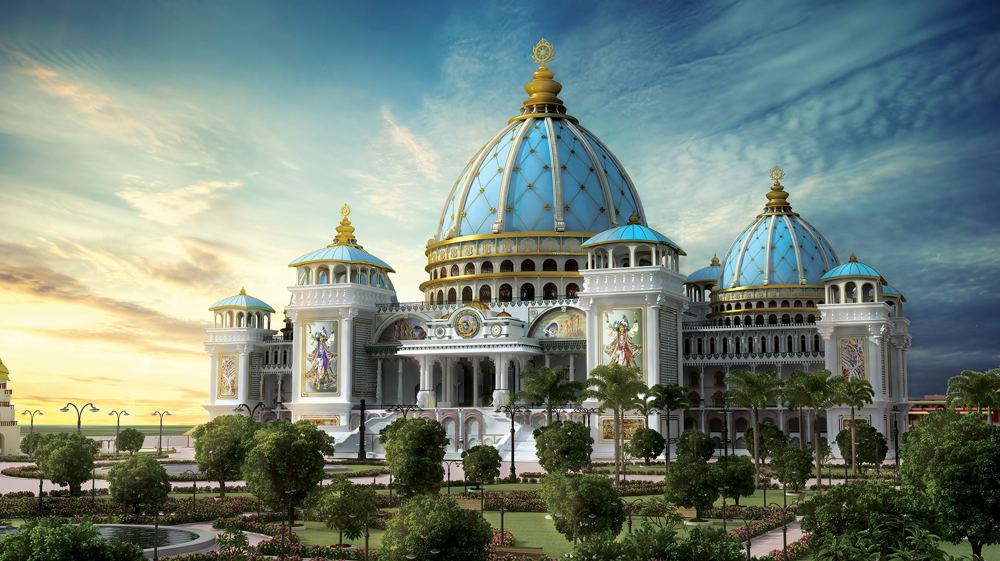
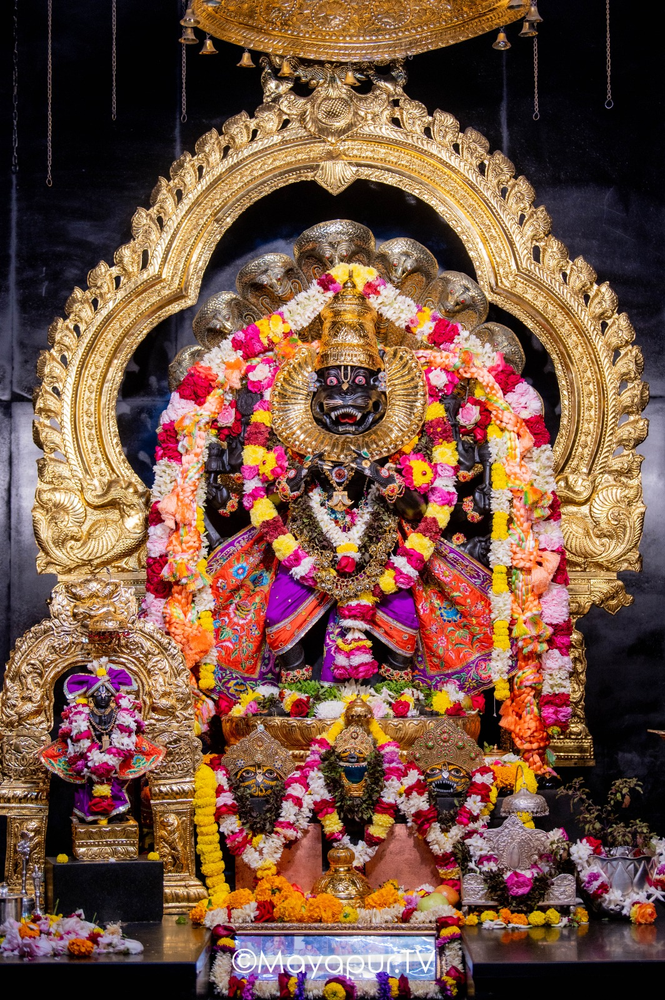
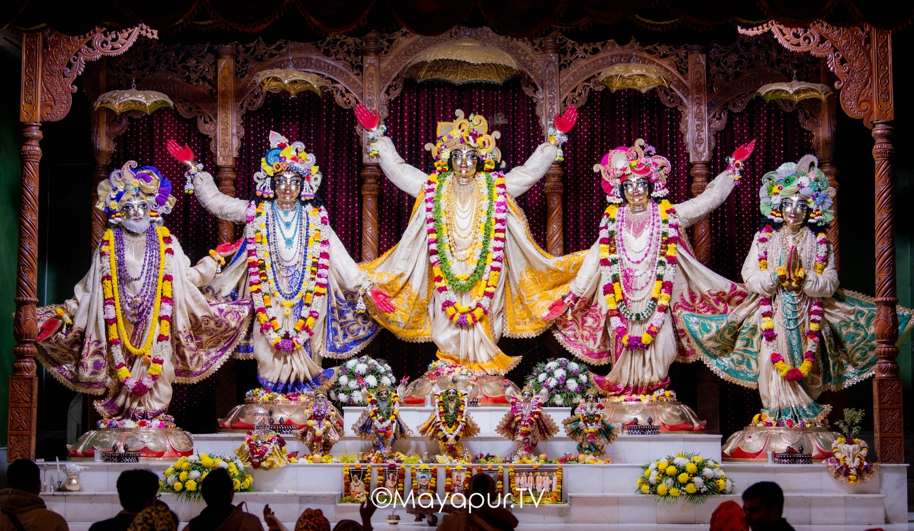
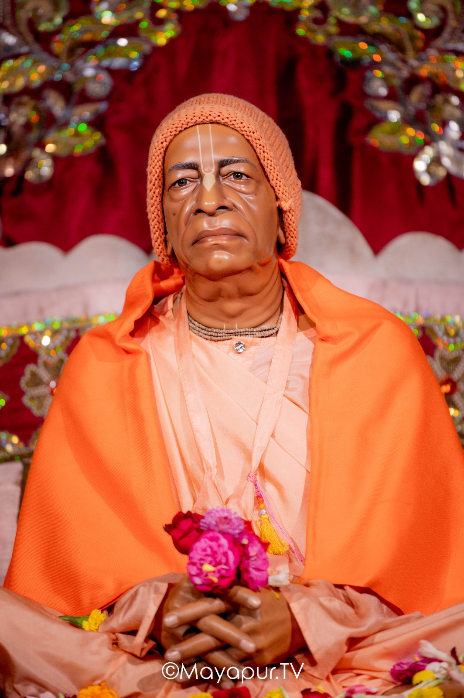

Discover the Divine Splendor of
Sri Mayapur Dham:-
-
Sri Sri Radha Madhava
Immerse yourself in the enchanting beauty of Radha and Krishna, the divine embodiment of love and devotion.
-
Sri Pancha Tattva
Behold the powerful unity of the five transcendental truths, led by Sri Chaitanya Mahaprabhu, the golden avatar of love.
-
Lord Narasimhadeva
Feel the fierce protection and infinite compassion of Lord Narasimhadeva, the divine savior of His devotees.
-
A Sacred Abode of Peace
Experience bliss, serenity, and transcendental joy in this vibrant epicenter of Krishna consciousness.
The Radha Madhav deities in Mayapur, West Bengal, are beautifully adorned divine forms of Sri Radha and Lord Krishna, worshipped with immense devotion at the ISKCON Mayapur temple. These deities represent the eternal love and union between Radha, the embodiment of devotion, and Krishna, the Supreme Divine.
Accompanied by the ashta sakhis (Radha's eight principal companions), these deities are central to the temple's worship and festivals. Their exquisite beauty, adorned with intricate garments and jewelry, inspires devotion and awe among visitors and pilgrims. The worship of Radha Madhav in Mayapur is infused with heartfelt kirtans, offerings, and ceremonies, allowing devotees to experience the transcendental joy of connecting with the divine couple.
Lord Narasimhadeva: The Protector of Devotees
Behold the magnificent and awe-inspiring form of Lord Narasimhadeva, enshrined in all His glory at the sacred ISKCON Mayapur temple. Drenched in the radiance of divine opulence, the deity emanates a powerful yet compassionate aura, symbolizing the ultimate protector of His devotees and the destroyer of evil.
Adorned with exquisite golden ornaments, vibrant garlands, and intricate silken attire, Lord Narasimhadeva captivates hearts with His transcendental beauty. Encircled by His majestic serpent hood and a dazzling gold arch, His lion-like countenance and merciful gaze inspire a sense of reverence and awe.
As the embodiment of divine power and unconditional love, Lord Narasimhadeva stands as a guardian of truth and a refuge for all who seek shelter. Pilgrims from across the globe flock to Mayapur to offer their prayers and experience the overwhelming presence of His divinity. Bow down before this resplendent deity and feel the blessings of the Lord, who is always ready to protect His devotees and grant them peace and prosperity.


Pancha Tattva: The Magnificent Five in Mayapur
Witness the transcendental splendor of Sri Pancha Tattva, the five divine personalities—Sri Chaitanya Mahaprabhu, Sri Nityananda Prabhu, Sri Advaita Acharya, Sri Gadadhara Pandit, and Sri Srivasa Thakur—enshrined at the heart of the ISKCON Mayapur temple. These deities represent the most merciful incarnation of the Supreme Lord and His eternal associates, who descended to deliver the purest love of God through the chanting of the Hare Krishna Maha Mantra.
Clad in shimmering golden attire, adorned with vibrant garlands and intricate jewelry, their raised arms invite all to join the joyous kirtan of the holy names. Their divine forms radiate compassion and bliss, filling the hearts of devotees with immense spiritual energy.
The Pancha Tattva deities in Mayapur are celebrated for their exquisite beauty and their role in spreading the Sankirtan movement, as envisioned by Sri Chaitanya Mahaprabhu.
Srila Prabhupada: The Eternal Founder-Acharya of ISKCON
Behold the divine and life-like murti of His Divine Grace A.C. Bhaktivedanta Swami Srila Prabhupada, seated gracefully at the heart of ISKCON Mayapur. Clad in saffron robes, symbolizing renunciation and transcendence, Srila Prabhupada radiates spiritual serenity and timeless wisdom.
As the visionary Founder-Acharya of ISKCON, Srila Prabhupada dedicated his life to spreading the universal message of Krishna consciousness worldwide. With hands gently folded and holding vibrant flowers, his murti inspires humility, devotion, and unflinching dedication to service. The intricacy of his expression reflects deep compassion and an unshakable resolve to uplift humanity through the teachings of Lord Krishna.
This sacred space in Mayapur, where his divine presence resides, offers devotees a chance to connect with his unmatched legacy and seek his blessings. It stands as a profound reminder of his pioneering efforts to illuminate the world with the light of the Bhagavad Gita and Srimad Bhagavatam.
